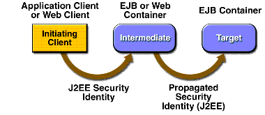

Propagating Security Identity
When you deploy an enterprise bean or web component, you can specify the security identity that will be propagated (illustrated in Figure 32-8) to enterprise beans invoked from within that component.

Figure 32-8 Security Identity Propagation
You can choose one of the following propagation styles:
- The caller identity of the intermediate component is propagated to the target enterprise bean. This technique is used when the target container trusts the intermediate container.
- A specific identity is propagated to the target enterprise bean. This technique is used when the target container expects access via a specific identity.
Configuring a Component's Propagated Security Identity
To configure an enterprise bean's propagated security identity, do the following:
- Select the enterprise bean to configure.
- In the Security Identity panel of the Security pane, select the security identity that will be propagated to the beans that this enterprise bean calls:
- If you want the principal of this enterprise bean's caller to be propagated to other beans that it calls, choose Use Caller ID.
- If you want a security identity other than the caller's identity propagated to other beans, choose Run As Role, select the role from the menu, and then select the User In Role from the available users in the selected role.
- If the role that you want to use as the security identity is not in the list, click Edit Roles and add the role.
To configure a web component's propagated security identity, do the following:
- Select the web component to configure.
- In the Security Identity panel of the Security pane, select Use Caller ID if the caller ID is to be propagated to methods of other components called from this web component. Otherwise, select Run As Role, and select a role from the list of known roles in the WAR file.
- If the role that you want to use as the security identity is not in the list, click Edit Roles and add it.
Configuring Client Authentication
If an application component in an application client container accesses a protected method on a bean, use client authentication.
Trust between Containers
When an enterprise bean is designed so that either the original caller identity or a designated identity is used to call a target bean, the target bean will receive the propagated identity only; it will not receive any authentication data.
There is no way for the target container to authenticate the propagated security identity. However, because the security identity is used in authorization checks (for example, method permissions or with the
isCallerInRole()method), it is vitally important that the security identity be authentic. Because there is no authentication data available to authenticate the propagated identity, the target must trust that the calling container has propagated an authenticated security identity.By default, the Application Server is configured to trust identities that are propagated from different containers. Therefore, there are no special steps that you need to take to set up a trust relationship.
All of the material in The J2EE(TM) 1.4 Tutorial is copyright-protected and may not be published in other works without express written permission from Sun Microsystems.